Arvie is a mercenary you can unlock in the pirate ship.
| Flesh-eater | |
|---|---|
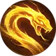 |
Fire a flesh-eating snake arrow on your target that deals 110% of your damage. Adds 1 combo point Cost: 30 Energy. |
| Stalk the prey | |
|---|---|
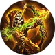 |
Throw a poisonous arrow that deals 250% of your damage. For 5 seconds after the hit, the target's attack speed is reduced by 10% and he receives 8% more damage from all sources per combo point spent. Consumes all your combo points. 6 seconds cooldown. Cost: 45 Energy |
| Kill shot | |
|---|---|
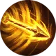 |
Fire a kill shot that deals 130% of your damage for each combo point spent. Consumes all your combo points. 12 seconds cooldown. Cost: 70 Energy |
| Weapon | Chest | Boots | Ring | |
|---|---|---|---|---|
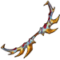 |
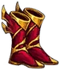 |
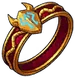 | ||
| Wrist | Shoulder | Belt | Relic | |
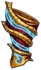 |
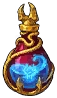 | |||
| Ankh | Rune | Idol | ||
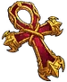 |
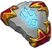 |
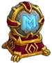 |
||
| Talisman | Necklace | Trinket | ||
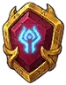 |
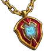 |
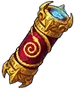 |
Arvie's childhood was a symphony of rustling leaves, whispering winds, and the occasional twang of her bowstring. On the outskirts of the village, where the dense forest embraced the land, Arvie, the forester's daughter, grew up in harmony with nature.Raised by her father, the village forester, she learned the language of the woods. Nature was her sanctuary, and the dense forest became her playground. While other girls were taught the art of homemaking, Arvie thrived in the untamed wilderness.
Her days were spent tracking elusive prey, her keen eyes following the faintest trails. As the child of the forest, she learned the secrets of the trees, the calls of the birds, and the gentle rhythms of the wild. Amidst the towering oaks and dappled sunlight, Arvie developed a deep connection with the land, understanding the delicate balance that kept the woods alive.
As Arvie blossomed into a skilled huntress, the village buzzed with tales of her unmatched accuracy with the bow. Her afternoons were filled with the thrill of the hunt and dealing with the wild game. Yet, her heart yearned for something beyond the silent company of trees. Some days in the market square, she would glimpse Garret, the butcher's son, immersed in the world of knives and cleavers.
Their worlds collided in the quiet moments between the market stalls and the shadowy aisles of the butcher shop. Arvie, in her leather hunting attire, and Garret, surrounded by the lingering scent of blood, shared stolen glances that spoke of a connection too potent to ignore. Where Garret's world was defined by the starkness of meat and steel, Arvie's existence was a dance with the vibrant hues of nature.
The pivotal moment arrived when Arvie decided to bring the fruits of her hunts to the butcher's shop. The intoxicating blend of fresh meat and the outdoors hung in the air as their eyes locked across the counter. In that moment, the butcher's son and the forester's daughter found a harmony that transcended the differences in their upbringing. Arvie, captivated by the determination in Garret's eyes, felt a pull toward a world beyond the dense foliage of the forest.
Their love story unfolded like a fable told in the whispers of the wind. Arvie and Garret's stolen moments were framed by the leaves of ancient trees and the soft glow of moonlight filtering through the branches. In the secrecy of their love, Arvie found a sanctuary where societal expectations held no power. Their love was a wildflower, thriving in the spaces where others dared not tread, its petals unfurling in the face of adversity.
As the Undead shadows swept across the province, Arvie faced an impossible choice - loyalty or love. The invading darkness claimed the lives of her kin, leaving her world shrouded in grief. Unable to imagine a life without Garret, Arvie and her beloved chose to meet their end together. In death, they became an echo of the tragic tale that unfolded beneath the canopies of the forest, their spirits forever intertwined in the timeless embrace of love and despair.
In the throes of death, Garret and Arvie embraced each other, fully expecting eternal oblivion. Yet, the cold clutches of the Undead did not release them from their ephemeral existence. Instead, the duo awoke to the darkness, their senses heightened, and their hearts devoid of the warmth they once knew.
Unbeknownst to them, the Undead horde had claimed them, reanimating their lifeless bodies to serve as soldiers in the army of the damned. But, in the twisted irony of their fate, Garret and Arvie found solace in the fact that they were not separated by death. Their love, now a sinister parody of what it once was, became the tether that bound them in this new, nightmarish existence.
Wielding an ancient obsidian cleaver obtained from a long- forgotten burial, Garret moved with an eerie grace. The blade, once used to sever ties between the living and the dead, now served as an extension of his spectral will. Arvie, her skeletal bow gifted by their new masters, became a haunting figure, her arrows seeking out the hearts of the living.
Together, they danced through the shadows, a macabre waltz of death. Their connection transcended the horror of their actions as they carved a path through the living, no longer bound by the moral constraints that had once defined their lives. They reveled in the carnage, finding a twisted satisfaction in the chaos they wrought.
In the darkness, Garret and Arvie rarely spoke of the atrocities they committed. The Undead invasion had turned them into monsters, and their love, now entwined with death, shielded them from the weight of their actions. They roamed through villages, leaving trails of destruction in their wake, driven only by the insatiable hunger instilled by their Undead masters.
Yet, in the silent moments between battles, a flicker of their former selves would emerge. Garret would gaze into Arvie's empty eye sockets, and she, in turn, would feel the cold touch of his skeletal hand. In those fleeting instances, they remembered the warmth they once shared, even as the world around them burned.
As the Undead horde marched relentlessly, Garret and Arvie clung to each other, their devotion unbroken by the passage of time. They were no longer driven by the desires of the living; their purpose was to serve the Undead, and their love became a curse that bound them to this unending nightmare.
In the abyss of their cursed existence, Garret and Arvie, despite their skeletal forms, felt a lingering spark of the love that once defined them. Their masters, sensing the rebellious embers within their souls, sought to tighten their control. However, Garret and Arvie, bound by a love stronger than death itself, hatched a plan to break free from the shackles that held them in servitude. Under the cover of night, as the moon cast its ethereal glow upon the desolate landscape, Garret and Arvie made a solemn pact. The skeletal lovers, fueled by the remnants of their humanity, whispered promises of redemption in the silence of the forsaken night.
The battle for their souls was fierce. The Undead masters, sensing the rebellion within their ranks, unleashed their wrath upon Garret and Arvie. In the ocean of darkness, the skeletal lovers clung to each other, drawing strength from the love that had endured the trials of both life and death. Garret and Arvie, in an act of defiance, shattered the chains that bound them. With the echoes of their breaking liberation resonating through the night, the skeletal lovers ran, unshackled and free.
Embracing their newfound freedom, Garret and Arvie turned away from the malevolent horde. No longer slaves to the Undead masters, they embarked on a journey to seek redemption for the sins committed under the dark control. The skeletal couple, their love shining as brightly as the moon that guided them, sought to undo the harm they had inflicted upon the living. The skeletal lovers, now protectors rather than destroyers, fought side by side for the redemption of their souls.
Their love, once twisted by the darkness, had become a force of good that vanquished the lingering shadows. Garret's obsidian cleaver and Arvie's skeletal bow, once instruments of death, were now wielded in defense of the helpless. Together, they carved a path of redemption, a testament to the enduring power of love even in the face of unimaginable darkness.
No longer bound by the limitations of mortal life, they roamed the world, fighting for the innocent and dispelling the remnants of the Undead menace. Together, they stood as guardians of the living, their skeletal frames a stark reminder that even in the darkest corners, love had the power to conquer all. And so, Garret and Arvie, bound by an eternal love that defied both life and death, ventured into the horizon, their skeletal hands entwined as they faced an eternity together, united in triumph.
{kind=link}
{kind=link}
{kind=link}
{kind=link}
{kind=link}
{kind=link}
{kind=link}
{kind=link}
{kind=link}
{kind=link}
{kind=link}
{kind=link}
{kind=link}
{kind=link}
{kind=link}
{kind=link}
{kind=link}